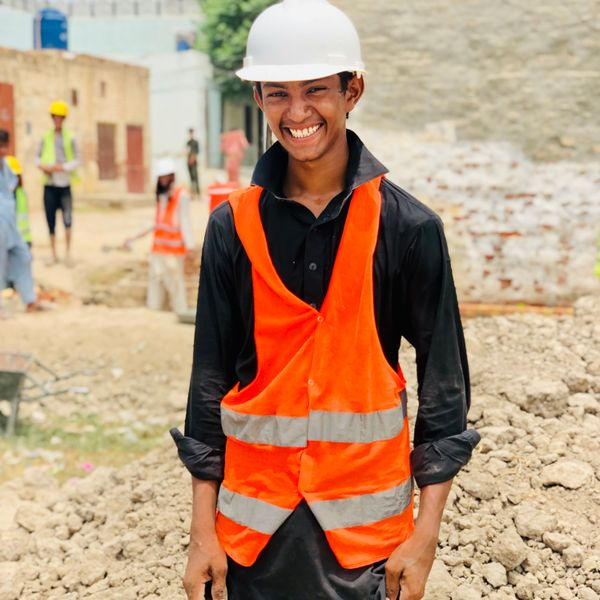
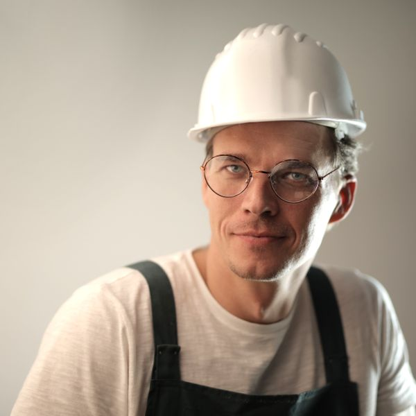
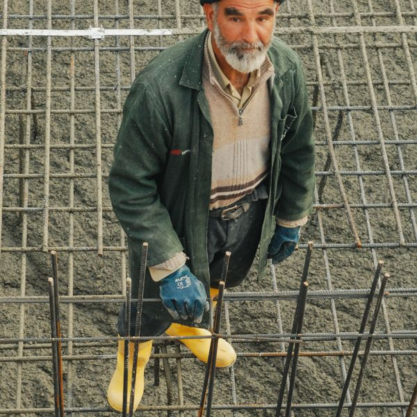

働く人

石塚（25歳）
前職は何をしていましたか？
チェーンの居酒屋でホールスタッフをしていました。3年くらい働いていたんですけど、このままでいいのかなって漠然と思っていて。手に職をつけたいという気持ちがずっとありました。
Startup Ringsに入社を決めた理由は？
求人サイトで「未経験OK」「資格取得全額支援」って書いてあって、最初は半信半疑でした。でも面接で社長と話したら、「うちは本気で育てるから」って言ってくれて。実際に未経験から入った先輩が何人もいると聞いて、ここなら大丈夫かもと思えたんです。
入社して大変だったことは？
最初の1ヶ月は体力的にきつかったです。筋肉痛がとれない日もありました（笑）。あと、道具や材料の名前が全然わからなくて。でも先輩が「最初はみんなそうだから」って言ってくれて、メモを取りながら一つずつ覚えました。3ヶ月くらいで身体も慣れてきましたね。
仕事のやりがいは？
自分が関わった家が完成したときの達成感は本当にすごいです。お客さんが「ありがとう」って言ってくれた瞬間は、飲食時代にはなかった感動がありました。あと、昨日できなかったことが今日できるようになる、その成長を実感できるのが楽しいです。
今の目標を教えてください。
まずは来年、2級大工技能士の試験に合格すること。先輩みたいに一棟まるごと任せてもらえる職人になりたいです。将来的には1級も取って、後輩に教えられる立場になりたいですね。

佐藤（32歳）
前職ではどんな仕事を？
リフォーム会社で営業をしていました。お客様と接するのは好きだったんですが、売上ノルマが厳しくて。もっと「ものづくり」に近い立場で仕事がしたいと思って、施工管理に転職しました。
転職して変わったことは？
一番変わったのは、仕事に対するやりがいです。前職は数字を追うことが中心でしたが、今は「良いものをつくる」ことに集中できる。あと、週休2日になって家族との時間が増えました。前は土日も仕事だったので、子どもの行事に参加できるようになったのが嬉しいですね。
資格取得支援を使いましたか？
はい、入社2年目で2級建築施工管理技士、4年目で1級を取りました。受験費用は全部会社持ちで、勉強会にも参加させてもらいました。1級を取ったら月3万円の資格手当がついて、年収が入社時から100万円くらい上がりました。
Startup Ringsの好きなところは？
人の良さですかね。困ったときに「大丈夫？」って声をかけてくれる先輩がいるし、社長との距離も近い。大きい会社にはない温かさがあります。あと、地場の工務店だからこそ、自分の意見が現場に反映されやすいのも魅力です。
今後のキャリアプランは？
今は2現場を掛け持ちで管理していますが、ゆくゆくはもっと大きなプロジェクトを任されるようになりたいです。会社の規模も少しずつ大きくなっているので、その成長に貢献できる存在でありたいですね。

高橋（45歳）
Startup Ringsに入ったきっかけは？
前の会社が人間関係がよくなくてね。腕には自信があったけど、もっと風通しのいい環境で働きたいと思って。Startup Ringsの社長とは知り合いを通じて出会って、「うちで一緒にやらないか」って声をかけてもらったのがきっかけです。
15年間で会社はどう変わりましたか？
入った頃はまだ5人くらいの小さな工務店でした。今は12人に増えて、若い子もたくさん入ってきて。週休2日制になったのもここ数年のこと。昔は「建設業は休めない」が当たり前だったけど、ちゃんと変わっていける会社だと思います。
若手の育成で心がけていることは？
焦らせないこと。最初は何もできなくて当たり前だから、「わからないことは何度でも聞いていい」って伝えています。あと、なるべく成功体験を積ませるようにしています。小さなことでも「よくできた」って言うようにしてますね。
大工の仕事の魅力は？
何十年も残るものをつくれること。自分が建てた家の前を通ると、「ああ、この家は俺がつくったんだ」って思う。それは15年やっても変わらない。お客さんに「この家にして良かった」って言ってもらえると、この仕事を選んで良かったと心から思います。
応募を検討している方へメッセージ。
未経験だからって遠慮する必要はないです。俺も最初は何もできなかった。大事なのは「やってみたい」って気持ちだけ。あとは俺たちが教えるから。建設業って「きつい」イメージがあるかもしれないけど、うちは違う。まずは一度、見に来てほしいですね。